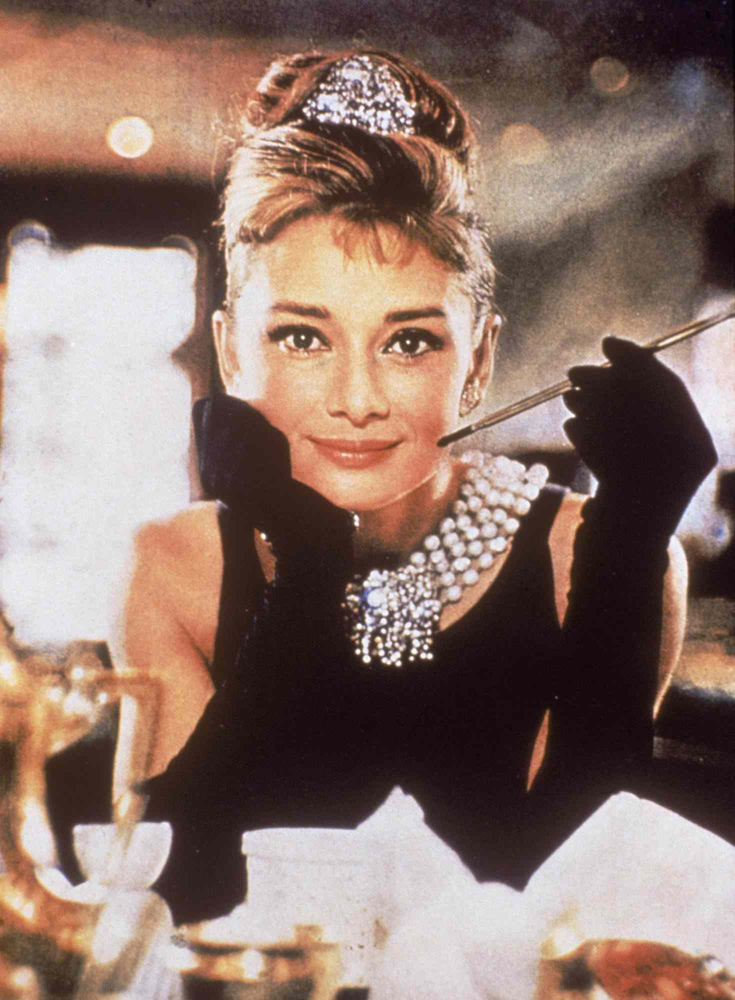

Audrey Hepburn

Audrey Kathleen Hepburn (née Ruston; 4 May 1929 – 20 January 1993) was a
British[a] actress. Recognised as a film and fashion icon, she was
ranked by the American Film Institute as the third-greatest female
screen legend from the Classical Hollywood cinema and was inducted into
the International Best Dressed Hall of Fame List. Born in Ixelles,
Brussels, to an aristocratic family, Hepburn spent parts of her
childhood in Belgium, England, and the Netherlands. She attended
boarding school in Kent, England, from 1936 to 1939. With the outbreak
of World War II, she returned to the Netherlands.[3] During the war, she
studied ballet at the Arnhem Conservatory, and by 1944, she performed
ballet to raise money to support the Dutch resistance.[4] She studied
ballet with Sonia Gaskell in Amsterdam beginning in 1945, and with Marie
Rambert in London from 1948. She began performing as a chorus girl in
West End musical theatre productions and then had minor appearances in
several films. She rose to stardom in the romantic comedy Roman Holiday
(1953) alongside Gregory Peck, for which she was the first actress to
win an Oscar, a Golden Globe Award, and a BAFTA Award for a single
performance. That year, she also won a Tony Award for Best Lead Actress
in a Play for her performance in Ondine.